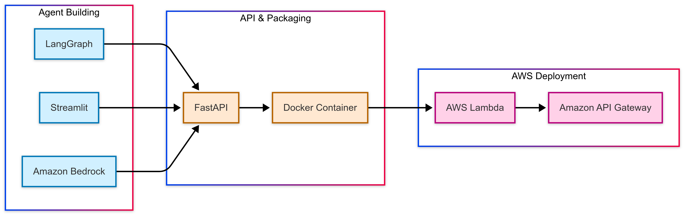

About Me
Isfar Baset
Data Analyst
Crafting AI solutions that bridge the gap between research and real-world impact. Specializing in machine learning, data visualization, and conversational AI systems.

Featured Projects

FMBench Assistant
A conversational AI assistant for Foundation Model Benchmarking built with Amazon Bedrock, AWS Lambda, and LangGraph. This tool helps users navigate complex benchmarking options through natural dialogue.

US Insights
Analyzing sentiment patterns across U.S. states based on Reddit conversations. Discover what different states are talking about and how those discussions vary in emotional tone.

Temp Talk
Exploring climate trends in Southeastern Utah National Parks and their impacts on delicate ecosystems. Analysis of heat, soil conditions, evaporation and precipitation patterns affecting the region.

Beats and Bytes
Exploring the intersection of music and machine learning. Discover patterns in popular music through data analysis, visualizations, and predictive models.

EV Insights
Examining EVs’ environmental impact, market share, and performance compared to gasoline vehicles. This analysis uses multiple data science techniques including Naïve Bayes classification, dimensionality reduction, clustering, decision trees and ARM to extract meaningful insights.

AI-Powered AQI Assistant (In Progress)
An interactive Gen-AI tool that lets users query real-time Air Quality Index (AQI) data for any city using natural language. Built on an MCP server and powered by the API Ninjas data source, this project aims to make environmental data easily accessible and conversational. Currently under development.
Hello! I’m originally from Dhaka, the vibrant capital city of Bangladesh. I came to the US in 2015 in pursuit of my bachelor’s degree in Computer Science and lived in West Michigan before moving to Northern Virginia in 2022.
I am currently a Data Analyst II at Shift Digital in the Data Operations and Analytics team, where I leverage data-driven solutions for enterprise clients. I graduated with a Master’s of Science in Data Science & Analytics from Georgetown University in 2025. My passion lies in leveraging tailored data and algorithms to solve intricate business problems and communicating complex insights to non-technical stakeholders.
I love spending time in charming cafes and exploring new cuisines. During my downtime I enjoy reading, painting and watching movies/TV shows.
📊 Professional Journey
#| echo: false
import plotly.graph_objects as go
import plotly.io as pio
# Clear any default templates to prevent overrides
pio.templates.default = "none"
# Timeline data organized chronologically
timeline_data = [
{
'year': '2015-2020',
'title': 'Bachelor of Science in Computer Science',
'organization': 'Grand Valley State University',
'location': 'Grand Rapids, MI',
'type': 'education',
'description': 'Foundation in computer science and programming'
},
{
'year': '2020-2021',
'title': 'Computer Engineer',
'organization': 'Array of Engineers',
'location': 'Grand Rapids, MI',
'type': 'work',
'description': 'Aerospace software verification and web development'
},
{
'year': '2021-2023',
'title': 'Data Analyst I',
'organization': 'Shift Digital',
'location': 'Birmingham, MI',
'type': 'work',
'description': 'Data operations and analytics for enterprise clients'
},
{
'year': '2023-2025',
'title': 'Master of Science in Data Science and Analytics',
'organization': 'Georgetown University',
'location': 'Washington, D.C.',
'type': 'education',
'description': 'Advanced data science and analytics specialization'
},
{
'year': '2025-Present',
'title': 'Data Analyst II',
'organization': 'Shift Digital',
'location': 'Birmingham, MI',
'type': 'work',
'description': 'Leading analytics initiatives and mentoring team members'
}
]
fig = go.Figure()
# Minimalistic color palette
colors = {
'education': '#6366F1', # Elegant indigo
'work': '#10B981' # Sophisticated emerald
}
# Create vertical timeline
for i, item in enumerate(timeline_data):
y_pos = len(timeline_data) - i - 1 # Reverse order (newest at top)
color = colors[item['type']]
# Minimalistic timeline dot
fig.add_trace(go.Scatter(
x=[0],
y=[y_pos],
mode='markers',
marker=dict(
size=12,
color=color,
line=dict(width=2, color='rgba(255, 255, 255, 0.9)'),
symbol='circle'
),
hovertemplate=(
f"<b style='color:white'>{item['title']}</b><br>"
f"<span style='color:white'>{item['organization']}</span><br>"
f"<span style='color:white'>{item['location']}</span><br>"
f"<span style='color:white'>{item['year']}</span><br>"
f"<i style='color:rgba(255,255,255,0.9)'>{item['description']}</i>"
"<extra></extra>"
),
hoverlabel=dict(
bgcolor=color,
font=dict(color='white', size=11, family='Inter, system-ui, sans-serif'),
bordercolor='rgba(255, 255, 255, 0.2)'
),
showlegend=False
))
# Clean, minimalistic text annotations
fig.add_annotation(
x=0.25,
y=y_pos + 0.1,
text=f"<b>{item['title']}</b>",
showarrow=False,
font=dict(size=13, color='#1F2937', family='Inter, system-ui, sans-serif'),
xanchor='left',
yanchor='middle',
name='title-text'
)
fig.add_annotation(
x=0.25,
y=y_pos - 0.05,
text=f"{item['organization']}",
showarrow=False,
font=dict(size=11, color='#6B7280', family='Inter, system-ui, sans-serif'),
xanchor='left',
yanchor='middle',
name='org-text'
)
fig.add_annotation(
x=0.25,
y=y_pos - 0.2,
text=f"{item['location']}",
showarrow=False,
font=dict(size=10, color='#9CA3AF', family='Inter, system-ui, sans-serif'),
xanchor='left',
yanchor='middle',
name='location-text'
)
# Year (left side) - clean and minimal
fig.add_annotation(
x=-0.25,
y=y_pos,
text=f"<b>{item['year']}</b>",
showarrow=False,
font=dict(size=10, color='#374151', family='Inter, system-ui, sans-serif'),
xanchor='right',
yanchor='middle',
name='year-text'
)
# Elegant timeline line
fig.add_trace(go.Scatter(
x=[0, 0],
y=[-0.5, len(timeline_data) - 0.5],
mode='lines',
line=dict(color='#E5E7EB', width=2),
showlegend=False,
hoverinfo='skip'
))
# Minimalistic legend
fig.add_trace(go.Scatter(
x=[None], y=[None],
mode='markers',
marker=dict(size=10, color=colors['education']),
name='Education',
showlegend=True
))
fig.add_trace(go.Scatter(
x=[None], y=[None],
mode='markers',
marker=dict(size=10, color=colors['work']),
name='Experience',
showlegend=True
))
# Clean, minimalistic layout with explicit overrides
fig.update_layout(
showlegend=True,
legend=dict(
orientation="h",
yanchor="bottom",
y=-0.12,
xanchor="center",
x=0.5,
font=dict(size=10, family='Inter, system-ui, sans-serif', color='#6B7280')
),
plot_bgcolor='rgba(0,0,0,0)',
paper_bgcolor='rgba(0,0,0,0)',
height=420,
margin=dict(l=160, r=320, t=20, b=50),
xaxis=dict(
showgrid=False,
showticklabels=False,
zeroline=False,
range=[-0.6, 1.4]
),
yaxis=dict(
showgrid=False,
showticklabels=False,
zeroline=False,
range=[-0.5, len(timeline_data) - 0.5]
),
# Override default template margins explicitly
template=None
)
# Minimalistic configuration
config = {
'responsive': True,
'displayModeBar': False,
'showTips': False
}
fig.show(config=config)For a detailed overview of my experience:
Download Resume
🎓 Education
Georgetown University
Master of Science in Data Science and Analytics • GPA: 4.0
📍 Washington, D.C. • May 2023 - May 2025
Key Coursework:
Probabilistic Modeling • Database Systems • Advanced Data Visualization • Data Ethics • Computational Linguistics • Machine Learning Deployment • Digital Storytelling • Big Data & Cloud Computing • Applied Generative AI
Leadership: Social Committee Member & Lead Mentor in the Data Science and Analytics program
Grand Valley State University
Bachelor of Science in Computer Science
📍 Grand Rapids, MI • Aug 2015 - May 2020
💼 Professional Experience
Data Analyst II (Current)
Shift Digital, Data Operations and Analytics Team • Birmingham, MI • May 2025 - Present
- Leading advanced data operations and analytics initiatives for enterprise clients
- Driving strategic data architecture decisions and mentoring junior analysts
Data Analyst I
Shift Digital, Data Operations and Analytics Team • Birmingham, MI • Nov 2021 - May 2023
- Improved data accuracy by 25% across 10+ enterprise projects by optimizing big data ETL processes
- Worked with cross-functional teams to design scalable data architecture, delivering actionable findings to senior executives
- Streamlined operations for 12 high-value clients and saved 15 hours weekly by automating billing data processing
- Managed data migration and transformation within Databricks, creating efficient pipelines for business-critical insights
- Leveraged SQL and Python within PySpark to transform raw data into cleaned, analysis-ready datasets
- Enhanced data visibility with interactive dashboards, enabling faster decisions for key stakeholders
- Crafted technical proposals achieving near 100% customer approval rate
Computer Engineer
Array of Engineers • Grand Rapids, MI • Jul 2020 - Nov 2021
- Verified Airbus A350 avionics software using DOORS and Ansys SCADE, ensuring aerospace industry compliance
- Improved user experience by optimizing web app features with AngularJS, increasing client retention by 25%
- Introduced modular workflows for software testing, achieving 98% on-time delivery
- Conducted A/B testing on web app features, identifying improvements to enhance functionality and usability
- Led GitHub code reviews across multidisciplinary teams, mitigating critical issues early in development
🛠️ Technical Skills
Programming
Python • SQL • R • Java • C++
Machine Learning
Scikit-learn • TensorFlow • PyTorch • XGBoost
Data Visualization
Tableau • Plotly • Seaborn
Big Data & Cloud
Apache Spark • Databricks • AWS SageMaker
NLP
spaCy • Hugging Face • BERT
Databases
MySQL • PostgreSQL • MongoDB • Snowflake
Tools & Methods
Docker • Flask • Git • Quarto • A/B Testing • Bayesian Analysis